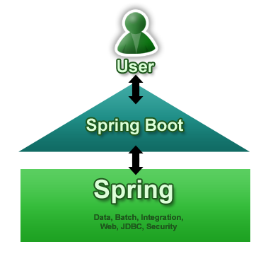
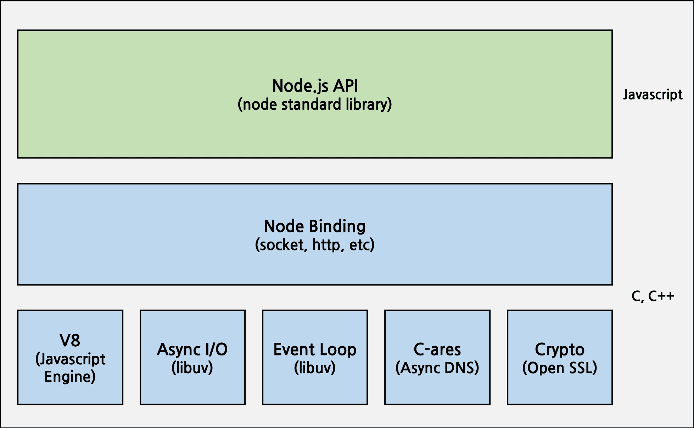
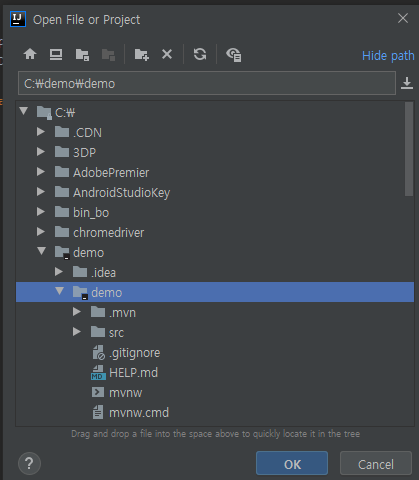
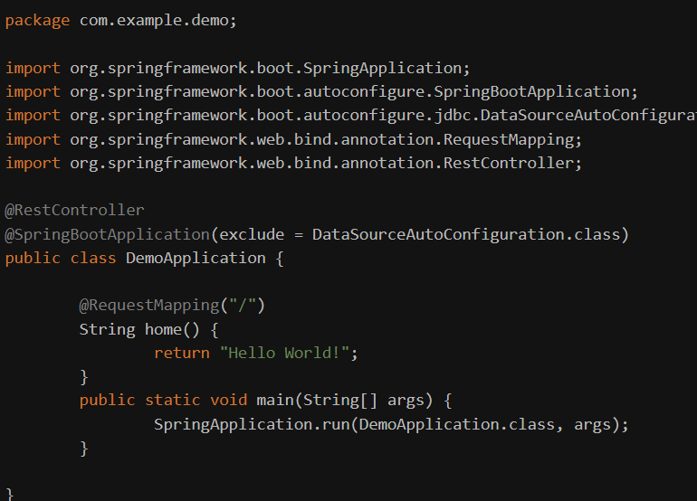
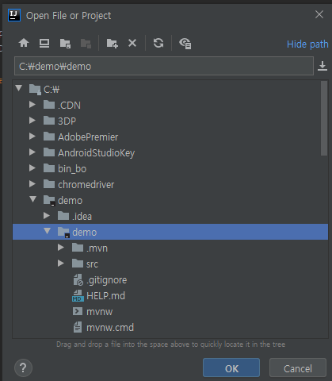
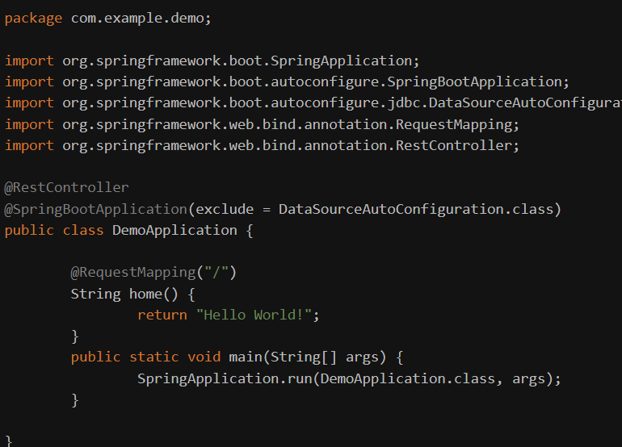
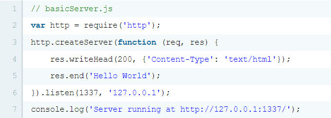
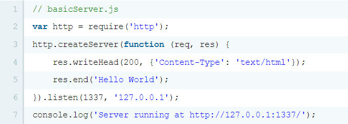

Spring Boot란?
Spring을 더 편리하게 이용하기 위한 도구
Spring Boot는 매우 간단하게 프로젝트 설정 가능하며 스프링(Spring) 개발을 더 쉽게 만들어주는 매개체이기도 하다.
Spring framework 기반 프로젝트를 복잡한 설정없이 쉽고 빠르게 만들어주는 라이브러리.
Spring boot는 실행하면 Spring 기반의 사용화가 가능한 애플리케이션을 만들 때 단독 실행하게 해주는 프로젝트이다.
장점
1. 라이브러리 관리 자동화.
스프링부트의 Starter 라이브러리를 등록해서 라이브러리 의존성을 간단히 관리할 수 있다.
2. 라이브러리 버전 자동관리
기존 스프링 라이브러리는 버전을 직접 입력해야 했지만, 스프링 부트는 pom.xml에 스프링 부트 버전을 입력해놓으면
spring 라이브러리 뿐만 아니라 third party라이브러리들도 호환되는 버전으로 알아서 다운로드 및 관리해준다.
3. 설정 자동화
스프링 부트는 @EnableAutoConfiguration 어노테이션을 선언해서 스프링에서 자주 사용했던 설정들을 알아서 등록해준다.
단점
1. 설정을 변경하고 싶은 경우 내부 코드를 살펴봐야하는 불편함이 있다.
2. Java Virtual Machine은 소프트웨어의 코드 실행 시간을 크게 증가시킨다.
코드가 기계어 코드로 직접 변환되는 C, C ++와 달리 프로세스는 조금 다르다.
3. JVM (Java Virtual Machine)의 모든 문제는 소프트웨어의 작성된 코드에 영향을줍니다.
JVM이 실패하면 프로그램도 실패한다.
Spring Boot 구조 ↓

Node.js란?
Node.js는 JavaScript를 서버에서도 사용할 수 있도록 만든 프로그램이다.
Node.js는 서버사이트 스크립트 언어가 아니고 프로그램(환경)이다.
Node.js는 웹서버와 같이 확장성 있는 네트워크 프로그램을 제작하기 위해 만들어졌다.
Node.js를 통해 여러 개발자가 만든 프로그램과 게임을 웹상에 구동시켜 플랫폼 제약에
벗어나 어디든 실행 가능하게 해준다.
장점
1. Node.js를 이용하여 서버를 만들 수 있다.
2. js는 자바와 같은 프로그래밍 언어보다 생산성이 좋아 같은 서버 코드를 짜는데 걸리는 시간이 적다.
3. restart 시간이 1초 미만이기 때문에 프로세스가 종료되어도 빠르게 다시 시작할 수 있고, 빠른 배포나 업그레이드 작업이 가능하다.
단점
1. 싱글 스레드 모델이기 때문에, 하나의 작업이 시간이 많이 걸리면 전체 시스템의 성능이 급격하게 떨어진다.
2. 스크립트 언어의 특성 상 해당 언어가 수행되어야 에러가 나는지 확인할 수 있고, 에러가 날 경우 프로세스가 종료된다.
3. Node 전용 모듈 사용 시 고급 기능이 적어 세밀한 가용성 구현이 어렵다.
Nodejs 구조 ↓

Spring 사용법
start.spring.io/ 접속
1) 아래와 같이 세팅 후 Dependencies에 Spring Web을 추가
 2) Generate를 눌러서 SpringBoot 프로젝트 파일을 생성 후 적당한 위치에 압축 풀기
3) Intellij로 해당 프로젝트를 열기

4) 아래의 링크를 참조하여 java 버전을 8로 맞추기
i5i5.tistory.com/252?category=0
gradle -> Reimport All gradle Projects로 다시 sync를 맞추기
5) DemoApplication 의 파일을 사진과 같이 코드를 수정한다.
exclude를 선언

6) DemoApplication 실행
2) Generate를 눌러서 SpringBoot 프로젝트 파일을 생성 후 적당한 위치에 압축 풀기
3) Intellij로 해당 프로젝트를 열기

4) 아래의 링크를 참조하여 java 버전을 8로 맞추기
i5i5.tistory.com/252?category=0
gradle -> Reimport All gradle Projects로 다시 sync를 맞추기
5) DemoApplication 의 파일을 사진과 같이 코드를 수정한다.
exclude를 선언

6) DemoApplication 실행
 7) 결과 창
7) 결과 창

Node.js 사용법
1) node.js는 파일 확장자가 js 또는 node이어야 하므로 아래 코드를 입력하여 node.basic.js로 저장한다
// node.basic.js
console.log('Hello World');
2) 터미널에서 아래 명령어를 입력하여 node 애플리케이션을 실행한다
node node.basic.js
 3) 서버 생성하기
아래 코드를 basicServer.js로 저장한다

4) 터미널에서 애플리케이션을 실행
5) http://127.0.0.1:1337/로 접속하여 서버가 생성됨을 확인
6) 결과 창
3) 서버 생성하기
아래 코드를 basicServer.js로 저장한다

4) 터미널에서 애플리케이션을 실행
5) http://127.0.0.1:1337/로 접속하여 서버가 생성됨을 확인
6) 결과 창
 아래 주석 참고
아래 주석 참고
 * 웹 서버는 기본적으로 80포트를 사용한다.
따라서 포트를 입력하지 않고 http://127.0.0.1/로 접속하게 되면 기본적으로 http://127.0.0.1:80/으로 인식하기 때문에
listen에서 포트를 80으로 한다면 주소뒤에 포트번호를 입력하지 않아도 된다
하지만 80포트를 사용하려면 다른 웹 서버와 충돌하지 않아야 하며, 관리자 권한(sudo)이 필요할 수도 있다.
* 웹 서버는 기본적으로 80포트를 사용한다.
따라서 포트를 입력하지 않고 http://127.0.0.1/로 접속하게 되면 기본적으로 http://127.0.0.1:80/으로 인식하기 때문에
listen에서 포트를 80으로 한다면 주소뒤에 포트번호를 입력하지 않아도 된다
하지만 80포트를 사용하려면 다른 웹 서버와 충돌하지 않아야 하며, 관리자 권한(sudo)이 필요할 수도 있다.
백엔드 장점
1. 모든 웹사이트 또는 애플리케이션의 백엔드에 액세스할 수 있다.
2. 누군가 시스템에 해킹을 시도할 때마다 쉽게 확인할 수 있다.
3. 백엔드 개발자는 프론트엔드 개발자보다 수요가 많다.
4. 백엔드 개발자가 사용할 수 있는 리소스가 많이 있다.
백엔드 단점
1. 시각적인 효과가 없어 빠른 피드백이 불가능하다.
2. 전문 지식이 없는 사용자에게 보여주거나 설명하는데 한계가 있다
각자 생각
Node.js 가 적합하다고 생각한다
- 선택 이유 -
프론트는 사용자에게 보여줄 정보를 처리하는 정도라 Spring Boot는 무겁다고 판단,
7개월 과정에서 Spring Boot을 배우기에는 시간이 터무니없이 부족하다고 생각이든다
둘 다 경험이 없는 상황에서 Node.js가 빠르고 적은 코드로 시작하기에 좋다는 점이 있고,
Node.js는 처음 배우는 사람도 하루만에 서버 구동하고 api도 하나 만들 수 있다
그에 비해 Spring Boot는 러닝 커브(학습 곡선, 드는 학습시간 및 비용) 가 존재한다
Spring Boot를 공부하면 Service, Controller, Repository 에 대해서 알아야된다
또한 각 컴포넌트를 어떤 식으로 채워야 하는지도 파악을 해야되서 해야 할 게 많아진다
Spring Boot에서는 좋은 구조와 형태로 boilerplate 코드가 많은 디자인을 권장하는데
스프링에서 권장하는 구조랑 라이브러리들을 사용하려면 다양한 코드를 만들어야 하고
처음에는 어렵고 숙달되면 번거로워지며 내부적으로 메모리를 많이 차지한다.
기업이 원하는 조건 및 언어
java 개발자/ JSP 개발자 웹디자이너
우대사항 : 정보처리기사 , 프레젠테이션 프로그램 활용 html, css 활용 퍼블리싱 가능
ul, ux 기본 역량
포토샵, 일러스트 활용
SW 개발자 웹 퍼블리셔
우대사항 : Java/JSP 기반 웹 개발 퍼블리싱과 디자인 모두 가능 (html, css, js)
전자정부 프레임워크 활용 가능자(Spring 4.x 기반)
백엔드 개발자 프론트엔드
우대사항 : 프레젠테이션 프로그램 활용 Wed 프론트엔드 기반 기본적인 지식
Node.js AWS 사용 및 프로젝트 경험
axios
google fcm
My SQL 다룰 수 있어야함